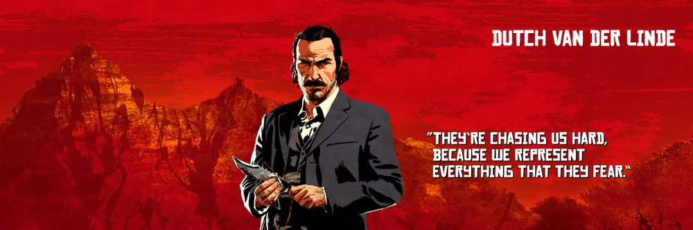
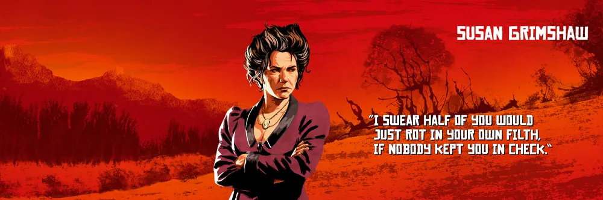
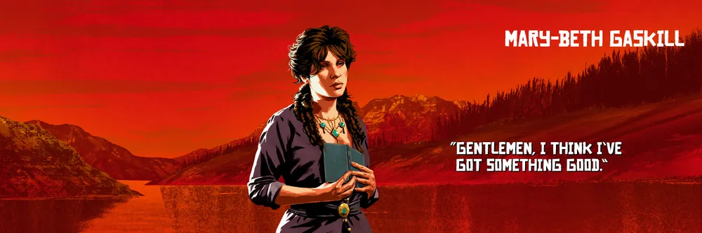
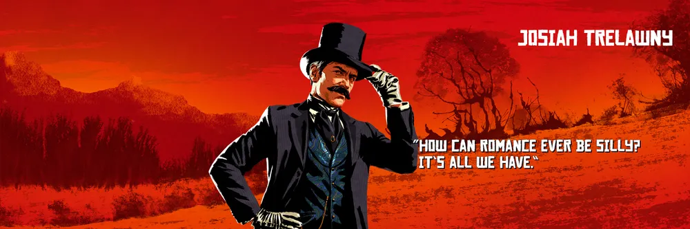

Protagonista
O homem mais competente da gangue de Dutch, ele faz parte dessa vida desde que era um garoto. Um homem tranquilo, mas sem piedade, ainda que tenha seu próprio senso de honra. Um homem que garante que o trabalho seja feito.
Protagonista
Um órfão que foi acolhido por Dutch quando ainda tinha 12 anos, John teve que sobreviver usando sua astúcia. Destemido e de temperamento forte, ele e Arthur são os membros preferidos da gangue de Dutch.
Antagonista
Líder da gangue. Idealista, anarquista, carismático, estudado e bem vivido, mas começa a aparentar estar perdendo a cabeça devido a pressão do mundo moderno.

Antagonista
Um assassino. Selvagem e imprevisível, mas vive por momentos de emoção.
Secundário
Um mestre na arte da trapaça, um cavalheiro e ladrão, Hosea é o melhor amigo de Dutch e seu braço direito há mais de 20 anos. Inteligente, ele pode sair de qualquer situação usando sua lábia.
Secundário
Uma moça vinda de Dublin, na Irlanda, é o amor de Dutch e começa e demonstrar que a vida sempre em fuga está começando a deixa-la cansada.
Secundário
A chefe do acampamento, tudo poderia ter virado uma bagunça se Susan não estivesse no comando anos atrás. Firme e sem paciência para conversa furada, ela mantém a ordem no grupo.

Secundário
O cozinheiro do grupo, Pearson passou um tempo na marinha, uma época que ele vive relemebrando. Animado, parece viver em negação da vida que assumiu.
Secundário
Um membro novo da gangue, Charles é quieto e reservado, mas extremamente competente em tudo o que faz, sendo praticamente invencível em uma luta. Um homem decente e honesto que, por acaso, também pode ser letal.
Secundário
Um ex-soldado expulso do exército. Vive de cabeça quente e tende a agir antes de pensar, mas é forte, dedicado e sempre pronto para brigar.
Secundário
Vindo da Áustria, Herr Straus é responsável por manter o dinheiro da gangue intacto. Um homem sério e frio, tem todas as qualidades que um agiota deveria ter.
Secundário
Uma órfã que precisou sobreviver trabalhando em bares e bordéis, Abigail é uma mulher forte, que não esconde suas opiniões e viu o suficiente da vida para saber como sobreviver contra tudo e todos.
Secundário
Uma órfã que precisou sobreviver trabalhando em bares e bordéis, Abigail é uma mulher forte, que não esconde suas opiniões e viu o suficiente da vida para saber como sobreviver contra tudo e todos.
Futuro protagonista
O jovem Jack cresceu com a gangue, apesar de todos fazerem o possível para esconder a realidade de suas ações para o garoto. Ele adora a natureza e é bem cuidado por seus vários tios e tias.
Secundário
Uma mulher acostumada com trapaças e armas, que pode beber mais que qualquer um que aparecer na sua frente. Destemida e divertida, ela adora a vida de fora-da-lei e não mudaria nada.
Secundário
Um notório caçador de recompensas e revolucionário mexicano, Javier consegue criar uma conexão forte com Dutch pelos seus ideais. Bastante comprometido e leal.
Secundário
Um fora-da-lei desde os 12 anos, Tilly fazia parte de outra gangue antes de se juntar ao bando de Dutch. De pensamento forte, ela pode se defender e não tem medo de dizer o que pensa.
Secundário
Um homem desleixado, mas que gosta dos bons momentos da vida, Uncle sempre está perto de uma garrafa de whiskey e nunca perto de onde existe trabalho. Se ele não fosse tão divertido, Dutch já teria se livrado dele há anos.

Secundário
Uma mulher gentil e boa, o que faz dela uma criminosa perfeita. Até as pessoas perceberem que foram passadas para trás, Mary-Beth já está longe com o seu dinheiro.

Secundário
O jovem Lenny está em fuga desde os 15 anos de idade após ter eliminado os homens que mataram o seu pai. Inteligente, bem educado, competente e ambicioso, ele está sempre pronto para fazer o seu papel.

Secundário
Um brincalhão espalhafatoso, Trelawny é um homem difícil de entender, mas sempre consegue bons alvos para a gangue.

Secundário
Um ex-membro da igreja que se perdeu para a vida bandida, Swanson salvou a vida de Dutch no passado, motivo pelo qual ele ainda faz parte da gangue.
Secundário
Um jovem e arredio irlandês que vem de uma família de criminosos. Ele sempre está em busca de ação e acredita nos seus talentos... talvez um pouco demais.
Secundário
Uma viúva que quer vingança a todo custo contra aqueles que mataram seu marido. Sem medo de nada e de ninguém, ela não é uma mulher que deve ser passada para trás, mas ainda consegue ser bastante leal para aqueles de quem gosta.